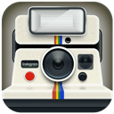

¡Hola, soy Liz! 💕 Web Design & Development · Paid Media · Social Media ============================================== SOBRE MÍ: ============================================== Combino diseño, tecnología y marketing para crear experiencias digitales con objetivos claros. He trabajado dentro de SaaS, bienes raíces, gastronomía, hotelería, retail, QA y servicios legales. ¿La misión? Siempre la misma: más captación, más reservas y más ventas. ============================================== LO QUE HAGO ============================================== 🎨 Diseño y desarrollo web Sitios y landing pages donde la identidad visual, la funcionalidad y la conversión por fin se llevan bien. 📈 Paid Media y Social Media Campañas digitales, estrategia de contenido y dirección creativa. O sea: que tu marca aparezca donde tiene que aparecer. ✉️ Email marketing y automatización Campañas de email, flujos de CRM e integraciones. ============================================== MIS HERRAMIENTAS 🧰 ============================================== Diseño y desarrollo: WordPress · Elementor · Nuxt · Vue · Sanity HTML · CSS · Git Marketing y automatización: Meta Ads · LinkedIn Ads · Google Ads Google Analytics · Brevo · Zoho CRM · Zapier ============================================== PROYECTOS WEB (los que sí puedo enseñar) ============================================== » Conservatorio Sitio web, landing pages, formularios e integraciones Elementor · Nuxt · Vue · Sanity » Calasol Diseño y desarrollo web WordPress · Elementor ---------------------------------------------- Diseñar con intención. Comunicar con claridad. Medir para mejorar. ¿Hablamos? → lizbethvelazquezest@gmail.com ---------------------------------------------- P.D. ¡El escritorio funciona de verdad! • Doble clic en un icono para abrirlo. • Arrastra las ventanas desde su barra de título. • Clippy sabe cosas. Hazle clic.
HOBBIES.TXT Cosas que hago en mi tiempo libre, además de trabajar y dormir. ============================================== ☕ Tomar café Un latte o un café con leche siempre sera necesario para empezar el día. Sin un café, no existo. 📚 Leer No si siempre hay un libro en curso pero eso es lo que se intenta. Ultimamente obsesionada con la literatura Rusa. 🎬 Mirar series y películas "Un capítulo más y me duermo." (Spoiler: ya casi no pasa.) 🧉 Tomar mate en el parque en un día soleado Termo, mate, galletitas, solcito y pasto. 🧠 Aprender cosas nuevas La curiosidad siempre gana. Y si es algo que puedo aplicar en mi trabajo, mejor. 🥸 Gamer y Otaku in disguise. Me gusta jugar y ver anime, pero actualmente ninguno me define. ============================================== Nivel de batería: [■■■■■■■■□□] 80 % café
